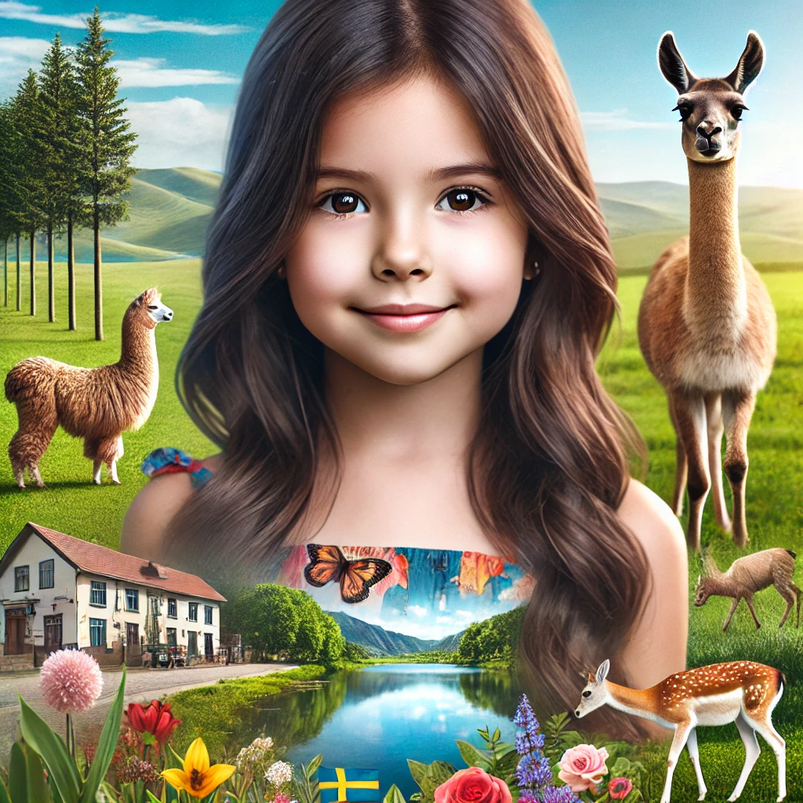

Introducción
Dejanara, una niña ecuatoriana de seis años, llena de curiosidad y valentía, se embarca en una aventura extraordinaria cuando su familia se muda a Suecia. Acostumbrada al sol radiante y la vibrante cultura de Ecuador, Dejanara se enfrenta a un mundo completamente diferente: un país de paisajes nevados, un idioma desconocido y un frío que cala hasta los huesos. Este libro narra su viaje de adaptación, descubrimiento y crecimiento en una tierra mágica de sol de medianoche. Acompaña a Dejanara mientras se adentra en las tradiciones suecas, construye nuevas amistades y aprende a apreciar la belleza de la diversidad. Su historia es un testimonio del poder de la amistad, la importancia de la adaptación y la magia que reside en ser diferente. Prepárate para una emocionante aventura que te conmoverá el corazón y te inspirará a abrazar lo desconocido....
Prologo: El Sol de Medianoche en una aventura escandinava.
El viento silbaba una melodía desconocida, una canción gélida que acariciaba las mejillas de la niña y se le erizaban los finos vellos de los brazos. A sus seis años, el frío era una experiencia casi tan novedosa como la nieve que crujía bajo sus botas, un sonido que le recordaba al azúcar cuando la abuela la molía para hacer sus deliciosos dulces de panela. La niña se apretó más la gruesa bufanda roja que le había regalado su madre antes de partir, un abrazo de lana que conservaba el aroma familiar del hogar que había dejado atrás. Ecuador, con su sol radiante y sus mercados rebosantes de colores y olores vibrantes, parecía un sueño lejano, una postal borrosa en el álbum de sus recuerdos. Apenas hacía un mes que su padre, un hombre con el espíritu inquieto de un explorador, había decidido mudarse Suecia. Un cambio radical, un salto al vacío hacia un mundo que la niña solo conocía por las fotografías de internet: paisajes blancos e inmensos, casas de madera como sacadas de un cuento de hadas y un idioma que sonaba a música de elfos. Dejanara, una niña de espíritu curioso y valiente. Había aceptado la aventura con una mezcla de emoción y aprehensión. Le encantaba explorar, descubrir nuevos horizontes, pero dejar atrás a sus amigos, su escuela, el olor a tierra mojada después de la lluvia, le dejaba un hueco en el pecho, una nostalgia que intentaba disimular con una sonrisa. Suecia la recibió con un abrazo de hielo. Un frío que calaba hasta los huesos, un cielo gris que parecía extenderse infinitamente y un silencio profundo, roto solo por el graznido ocasional de algún cuervo invisible. Las casas, aunque pintorescas con sus tejados nevados y sus ventanas iluminadas, parecían observarla con recelo, como guardianes silenciosos de un secreto ancestral. El idioma, un conjunto de sonidos guturales y melodiosos a la vez, se le escapaba como el agua entre los dedos. Dejanara se sentía como una pequeña colibrí perdida en un bosque de pinos gigantes, desorientada, fascinada y un poco asustada. Pero Dejanara no era de las que se acobardan fácilmente. En su interior ardía una llama, una chispa de aventura heredada de su padre, que la impulsaba a explorar, a descubrir, a comprender. Había aprendido a trepar árboles más altos que cualquier edificio en su ciudad natal, a hablar con las mariposas en el jardín de su abuela y a descifrar los misterios de las estrellas en las noches claras del verano ecuatoriano. Ahora, se enfrentaba a un nuevo desafío, un nuevo enigma: desentrañar los secretos de esta tierra de hielo y sol de medianoche, un lugar donde las leyendas vikingas se mezclaban con la tecnología de vanguardia y donde el aroma a café recién hecho competía con el perfume a pino y nieve. Este libro cuenta la historia de cómo Dejanara, armada con su valentía, su curiosidad y una maleta llena de recuerdos, se adentra en un mundo desconocido, un mundo lleno de desafíos, sorpresas y la promesa de una aventura inolvidable. Una aventura que la transformará para siempre y que le enseñará que, a pesar de las diferencias, el sol, aunque de medianoche, puede brillar con la misma intensidad en cualquier rincón del planeta. ...

Capítulo 1: Adiós al sol ecuatoriano
Capítulo 1: Adiós al sol del Ecuador. El sol ecuatoriano, implacable y generoso, se colaba por las rendijas de la persiana, dibujando rayas doradas sobre el rostro dormido de Dejanara. Un gallo cantó en la distancia, un sonido familiar que pronto dejaría de escuchar. Dejanara abrió los ojos, un nudo en la garganta le recordaba la inminencia del viaje. Hoy era el día. Hoy dejaban Ecuador. La casa, normalmente llena de vida y bullicio, se encontraba en un estado de organizado caos. Cajas de cartón, etiquetadas con nombres crípticos como "Cocina", "Libros" o "Recuerdos", se apilaban en la sala, formando un laberinto improvisado. Su madre, con el cabello recogido en un moño desordenado, dirigía la orquesta del embalaje, dando instrucciones precisas a la mujer que les había ayudado con las tareas del hogar desde que la niña tenía memoria. Dejanara se levantó de la cama y se acercó a la ventana. Desde allí podía ver el volcán Reventador, majestuoso e imponente, recortado contra el cielo azul. Un paisaje que llevaba grabado en el alma, un testigo silencioso de sus juegos, sus risas y sus lágrimas. Unas lágrimas, calientes y silenciosas, rodaron por sus mejillas. El aroma a café recién hecho la guio hacia la cocina. Su madre, al verla, le dedicó una sonrisa comprensiva. "Ven, mi amor, siéntate a desayunar. Tenemos un día largo por delante". El desayuno, un festín de pan de yuca, huevos revueltos y jugo de naranjilla, transcurría en un silencio inusual, roto solo por el tintineo de las cucharas contra los platos. Dejanara apenas probó bocado. Un torbellino de emociones la embargaba: la tristeza de dejar atrás todo lo que conocía, la emoción de la aventura que les esperaba, la curiosidad por descubrir un mundo nuevo y desconocido. Después del desayuno, comenzó la tarea de las despedidas. Los amigos del colegio, con rostros compungidos, le entregaron pequeños regalos: una pulsera tejida, un cuaderno lleno de mensajes, una foto enmarcada de todo el grupo. Las lágrimas, contenidas hasta ese momento, brotaron con fuerza. Abrazos apretados, promesas de mantenerse en contacto, palabras susurradas al oído. Cada despedida era una pequeña punzada en el corazón. La despedida más difícil fue la de su abuela. Doña Sonia, una mujer menuda con el rostro entristecido y unos ojos que irradiaban sabiduría y amor, la abrazó con fuerza, susurrándole palabras de aliento y cariño al oído. "No llores, mi niña. La vida es un viaje, y cada viaje es una oportunidad para aprender y crecer. Lleva a Ecuador en tu corazón, y nunca olvides quién eres ni de dónde vienes". Le entregó un pequeño amuleto, con la forma de un colibrí. "Para que te proteja y te guíe en tu camino", le dijo. Dejanara guardó el amuleto con cuidado, un tesoro preciado que la conectaría con sus raíces. Subió al taxi que los llevaría al aeropuerto, mirando por última vez el paisaje familiar. El sol del Ecuador, cálido y brillante, parecía despedirse de ella, deseándole buen viaje. Dejanara cerró los ojos, respirando hondo. Una mezcla de tristeza, alegría y curiosidad la acompañaba. La aventura estaba a punto de comenzar. ...
Capítulo 2: Un mundo blanco y frío
El avión aterrizó con un suave susurro, rompiendo el silencio de la cabina. Dejanara se asomó a la ventanilla, con los ojos bien abiertos por la sorpresa. Un manto blanco, inmenso e impoluto, cubría todo cuanto alcanzaba la vista. Árboles, casas, campos, todo parecía envuelto en una capa de azúcar. Nunca había visto tanta nieve junta. Ecuador, con sus verdes montañas y sus valles floridos, parecía un planeta diferente. Al bajar del avión, una ráfaga de aire gélido la golpeó en el rostro, haciéndola estremecer. El frío era intenso, penetrante, un frío que jamás había experimentado. Se apretó la bufanda roja contra la cara, buscando un poco de calor en la lana tejida por su madre. Su padre, a su lado, sonreía con entusiasmo. "¡Bienvenida a Suecia, Dejanara!", exclamó, con los brazos extendidos como si quisiera abrazar todo el paisaje nevado. El aeropuerto, moderno y eficiente, contrastaba con el pequeño y bullicioso aeropuerto de Quito. Todo parecía diferente: los carteles en un idioma incomprensible, las personas altas y rubias que caminaban a paso rápido, el sonido amortiguado de las maletas rodando sobre el suelo pulido. Dejanara se sentía como una extraterrestre, una pequeña criatura tropical perdida en un mundo de hielo. El trayecto hasta su nuevo hogar fue un desfile de paisajes nevados. Bosques de pinos cubiertos de blanco, lagos congelados que brillaban bajo el sol pálido, casas de madera con tejados puntiagudos como sacados de un cuento de hadas. Todo era hermoso, mágico, pero a la vez, extrañamente silencioso y desolado. Su nuevo hogar era un amplio y confortable departamento en un edificio moderno, con grandes ventanales que ofrecían una vista panorámica del paisaje nevado. La luz natural inundaba los espacios, creando una atmósfera cálida y acogedora a pesar del frío exterior. El interior, decorado con un estilo minimalista y funcional, ombinaba la madera clara con tonos neutros que aportaban un ambiente cálido. Una chimenea eléctrica en la sala de estar simulaba el crepitar de las llamas, proyectando un suave resplandor sobre los muebles de diseño escandinavo. Dejanara exploró el departamento con curiosidad, descubriendo cada rincón, cada detalle. Su habitación, amplia y luminosa, tenía una ventana que daba a un pequeño balcón desde donde podía contemplar el parque cubierto de nieve. Se imaginó sentada allí, abrigada con una manta, leyendo un libro y disfrutando de la tranquilidad del entorno. Dejanara exploró la casa con curiosidad, descubriendo cada rincón, cada detalle. Su habitación, en el piso de arriba, tenía una ventana que daba al jardín, ahora cubierto de nieve. Se imaginó jugando allí, construyendo muñecos de nieve y lanzando bolas de nieve, como había visto en las películas. La primera cena en Suecia fue una experiencia desconcertante. Salmón ahumado, puré de papas y una salsa blanca y cremosa que Dejanara no supo identificar. Nada que ver con los sabores intensos y vibrantes de la comida ecuatoriana. Echó de menos el arroz con menestra, el plátano frito, el ají picante que le hacía llorar de gusto. Comió poco, disimulando su desagrado para no preocupar a sus padres. Después de cenar, se asomó a la ventana. El cielo, de un azul profundo, estaba salpicado de estrellas. Unas estrellas que parecían más brillantes, más cercanas, que las que veía desde su ventana en Quito. El aire frío le mordía la cara, pero Dejanara no se movió. Estaba hipnotizada por la belleza del paisaje, por la magia de ese mundo blanco y frío que, poco a poco, comenzaba a sentir como suyo. El amuleto de colibrí, que llevaba colgado al cuello, le recordaba su hogar, su familia, sus raíces. Un recordatorio de que, a pesar de la distancia y las diferencias, seguía siendo la misma Dejanara, curiosa, valiente y dispuesta a abrazar la aventura que la vida le ofrecía. ...

Capítulo 3: La escuela nueva
El nerviosismo revoloteaba en el estómago de Dejanara como una bandada de mariposas inquietas. Era su primer día en la escuela sueca y, aunque su padre le había asegurado que todos serían amables, la incertidumbre la carcomía por dentro. La barrera del idioma se alzaba ante ella como una muralla infranqueable. Sabía decir "hola" y "gracias" en sueco, pero más allá de esas dos palabras, su vocabulario era un desierto. La escuela era un edificio moderno de ladrillo rojo, con grandes ventanales que dejaban entrar la luz pálida del invierno. El patio, cubierto de nieve, bullía de niños que corrían, gritaban y jugaban, ajenos a su presencia. Dejanara se aferró a la mano de su padre, buscando un poco de seguridad en su contacto familiar. Al entrar en el aula, todas las miradas se posaron en ella. Dejanara sintió que las mejillas se le encendían. La profesora, una mujer alta y rubia con una sonrisa amable, se acercó a ellos y les dio la bienvenida en un sueco que Dejanara apenas entendió. Su padre tradujo lo esencial: que se llamaba Fräulein Andersson, que Dejanara sería bienvenida en la clase y que todos estaban deseosos de conocerla. Fräulein Andersson la presentó a sus nuevos compañeros, una mezcla de niños y niñas de diferentes edades, todos con el cabello rubio o pelirrojo y los ojos azules o verdes. Dejanara sonrió tímidamente, repitiendo una y otra vez las dos palabras mágicas: "Hej" (hola) y "Tack" (gracias). Los niños la observaban con curiosidad, algunos con sonrisas tímidas, otros con una expresión de desconcierto. La clase comenzó, y Dejanara se sintió completamente perdida. Las palabras de la profesora, un torrente de sonidos incomprensibles, se le escapaban como el agua entre los dedos. Miró a su alrededor, buscando una pista, una señal que le ayudara a comprender lo que estaba sucediendo. Los demás niños seguían la lección con atención, tomando apuntes y participando en las discusiones. Dejanara se sentía como un pez fuera del agua. Durante el recreo, se sentó sola en un banco, observando a los demás niños jugar. Una niña, con dos largas trenzas pelirrojas y pecas salpicadas por la cara, se acercó a ella. Le habló en sueco, con una sonrisa amable. Dejanara no entendió ni una sola palabra, pero la sonrisa la animó a intentarlo. Señaló la nieve y dijo, en un español vacilante: "Nieve... bonita". La niña sonrió y repitió la palabra en sueco: "Snö... vacker". Dejanara repitió la palabra, tratando de imitar su pronunciación. "Snö... vacker". La niña asintió con entusiasmo y le tomó la mano, invitándola a unirse a un grupo de niños que construían un muñeco de nieve. Dejanara, aunque no entendía lo que decían, se sintió feliz de poder participar. Ayudó a rodar la bola de nieve, riendo junto a los demás niños cuando la bola se hacía cada vez más grande. El idioma seguía siendo una barrera, pero la sonrisa, el juego, la alegría compartida, eran un lenguaje universal que no necesitaba traducción. Había dado sus primeros pasos en ese nuevo mundo blanco y frío, y una pequeña chispa de esperanza se encendió en su corazón. Tal vez, después de todo, Suecia no sería un lugar tan solitario como había imaginado. ...

Capítulo 4: Descubriendo tradiciones
Diciembre llegó a Suecia envuelto en un manto de nieve y un aire de festividad. Las calles se iluminaron con luces de colores, los escaparates se llenaron de adornos navideños y el aroma a galletas de jengibre flotaba en el aire. Para Dejanara, acostumbrada al sol radiante y a las vibrantes celebraciones navideñas de Ecuador, la Navidad sueca era una experiencia completamente nueva. Una de las tradiciones que más la fascinó fue la de Santa Lucía. Sus nuevas amigas Lovis y Astrid, la niña de las trenzas pelirrojas “Astrid”, le explicó que Santa Lucía era una santa que traía luz en la oscuridad del invierno. El día de Santa Lucía, las niñas se vestían de blanco, con una corona de velas en la cabeza, y cantaban canciones tradicionales. Dejanara, invitada a participar en la celebración de la escuela, se sintió emocionada y un poco nerviosa. El vestido blanco, la corona de velas encendidas, la música solemne, todo le parecía mágico y misterioso. Cantó las canciones en sueco, aunque todavía no entendía el significado de las palabras, sintiendo la emoción del momento vibrar en su interior. La comida también era una parte importante de las festividades. Dejanara probó por primera vez las köttbullar, las famosas albóndigas suecas, con puré de papas y salsa de arándanos. Aunque extrañaba los sabores intensos de la comida ecuatoriana, las köttbullar le gustaron. Eran suaves, jugosas y reconfortantes, como un abrazo cálido en medio del frío invierno. Le recordaron a las empanadas que su abuela preparaba para Navidad, un plato tradicional ecuatoriano que le llenaba el corazón de nostalgia. Las diferencias entre las tradiciones navideñas de Ecuador y Suecia eran notables. En Ecuador, la Navidad era una fiesta llena de color, música y bullicio. Las calles se llenaban de gente, los villancicos resonaban en cada esquina y las familias se reunían para compartir una cena abundante, llena de sabores y aromas tradicionales. En Suecia, en cambio, la Navidad era una celebración más íntima, familiar, centrada en la luz, la paz y la tranquilidad. Las casas se decoraban con velas y adornos naturales, y las familias se reunían para disfrutar de una cena tradicional, en un ambiente cálido y acogedor. Dejanara, aunque extrañaba las bulliciosas celebraciones de su país, comenzó a apreciar la belleza y la serenidad de la Navidad sueca. La luz de las velas, la música suave, la nieve que caía silenciosamente sobre los tejados, creaban una atmósfera mágica, un ambiente de paz y recogimiento que la invitaba a reflexionar sobre el verdadero significado de la Navidad. Comprendió que, a pesar de las diferencias culturales, la esencia de la Navidad, el espíritu de amor, paz y esperanza, era universal. Un espíritu que unía a las personas, sin importar su origen, su idioma o sus tradiciones. Y en ese ambiente de paz y armonía, Dejanara sintió que, poco a poco, su corazón comenzaba a echar raíces en esa tierra fría y lejana, que empezaba a sentir como un nuevo hogar. ..

Capítulo 5: La magia de ser diferente
La nieve seguía cayendo sobre Estocolmo, cubriendo la ciudad con un manto blanco y silencioso. Los días eran cortos, las noches largas, y el sol, un disco pálido en el cielo gris, apenas calentaba el aire gélido. Pero dentro del corazón de Dejanara, una pequeña llama comenzaba a arder con fuerza, una llama alimentada por la amistad, la curiosidad y el descubrimiento de un mundo nuevo y fascinante. Dejanara había comenzado a comprender que ser diferente no era algo malo, sino una oportunidad para aprender, crecer y enriquecerse. Sus compañeros de clase, inicialmente intrigados por su acento extraño y sus costumbres desconocidas, ahora se mostraban interesados en su cultura. Durante el recreo, Dejanara les contaba historias sobre Ecuador, sobre sus vibrantes mercados, sus coloridos carnavales y sus majestuosos volcanes. Les hablaba de las deliciosas frutas tropicales, de los animales exóticos que habitaban la selva amazónica y de las leyendas ancestrales que su abuela le contaba antes de dormir. Sus compañeros la escuchaban con atención, fascinados por sus relatos. Astrid, su mejor amiga, le pedía que le enseñara palabras en español, y Dejanara, a cambio, aprendía nuevas palabras en sueco. La barrera del idioma, aunque todavía presente, ya no era un obstáculo insalvable. Se comunicaban con gestos, con dibujos, con sonrisas, con la alegría compartida de descubrir un mundo diferente a través de los ojos del otro. Un día, Fräulein Andersson le pidió que llevara a la escuela algún objeto que representara su cultura. Dejanara, emocionada, llevó un pequeño sombrero de paja toquilla, tejido a mano por indígenas ecuatorianos. Explicó a sus compañeros el significado del sombrero, su historia, su proceso de elaboración. Los niños, fascinados, se turnaron para probárselo, admirando la belleza y la simplicidad del arte popular ecuatoriano. Ese día, Dejanara comprendió la magia de ser diferente. Comprendió que sus raíces, su cultura, su historia, eran un tesoro que podía compartir con los demás, un tesoro que enriquecía a todos. Y al compartirlo, al abrir su corazón a un mundo nuevo, al aceptar y valorar las diferencias, se sentía más completa, más segura de sí misma. El frío de Suecia seguía calando hasta los huesos, pero el calor de la amistad, la alegría del descubrimiento y la magia de ser diferente, la abrigaban por dentro. Dejanara ya no se sentía como una pequeña colibrí perdida en un bosque de pinos gigantes. Se sentía como una semilla que había encontrado un terreno fértil donde echar raíces, crecer y florecer, aportando su propia belleza y su propio color al paisaje. La aventura sueca, que había comenzado con un nudo en la garganta y una lágrima en los ojos, se estaba transformando en una experiencia de aprendizaje, crecimiento y descubrimiento, una experiencia que la marcaría para siempre. ...

Capítulo 6: Suecia es mi nuevo hogar
La primavera llegó a Suecia con una explosión de color. La nieve, que durante meses había cubierto el paisaje con su manto blanco, se derritió, dejando al descubierto la tierra húmeda y oscura. Los árboles, desnudos durante el largo invierno, se vistieron de un verde tierno, y las flores, pequeñas y coloridas, comenzaron a brotar tímidamente entre la hierba. El sol, cada vez más alto en el cielo, calentaba el aire con su suave caricia. Dejanara se sentó en el pequeño balcón de su departamento, respirando hondo el aire fresco y perfumado a tierra mojada. Cerró los ojos, disfrutando de la cálida caricia del sol en su rostro. Habían pasado seis meses desde su llegada a Suecia, seis meses de cambios, desafíos y descubrimientos. Seis meses que la habían transformado para siempre. Abrió los ojos y contempló el paisaje que se extendía ante ella. El parque, ahora verde y lleno de vida, bullía de niños que corrían, gritaban y jugaban bajo el sol de la tarde. Astrid, su inseparable amiga, la esperaba al pie del edificio, con su bicicleta roja y sus dos trenzas pelirrojas ondeando al viento. Dejanara sonrió. Suecia ya no era ese mundo frío y desconocido que la había recibido con un abrazo de hielo. Suecia se había convertido en su nuevo hogar. Dejanara se sentía ahora un poco ecuatoriana, un poco sueca. Llevaba Ecuador en el corazón, en sus recuerdos, en sus costumbres, en los sabores y aromas de su infancia. Pero también llevaba a Suecia en su alma, en sus nuevas amistades, en sus nuevas experiencias, en el idioma que ahora hablaba con fluidez, en el amor por la naturaleza y la tranquilidad que había descubierto en esta tierra de bosques, lagos y sol de medianoche. Había aprendido la importancia de la diversidad, la riqueza que aportaba el conocer y comprender otras culturas, otras formas de vida. Había aprendido que las diferencias, en lugar de separarnos, nos unen, nos enriquecen, nos hacen crecer. Y había aprendido el valor de la amistad, la fuerza que nos da el apoyo de los demás, la alegría de compartir nuestras vidas con personas que nos quieren y nos aceptan tal como somos. Dejanara se levantó del banco y se dirigió hacia Astrid, con una sonrisa radiante en el rostro. El amuleto de colibrí, que aún llevaba colgado al cuello, brillaba bajo el sol de la tarde, un símbolo de sus raíces, de su identidad, de la niña ecuatoriana que, con valentía y curiosidad, había cruzado el océano para descubrir un nuevo mundo, un mundo que ahora, con orgullo y alegría, podía llamar hogar. La aventura sueca había terminado, pero un nuevo capítulo, lleno de promesas y posibilidades, se abría ante ella. Un capítulo que escribiría con la tinta de sus experiencias, con los colores de su corazón, con la magia de ser diferente, con la fuerza de la amistad y con el amor por dos tierras que, aunque separadas por miles de kilómetros, ahora formaban parte de su identidad. Dejanara, la niña ecuatoriana que llegó a Suecia con el corazón lleno de incertidumbre, se había convertido en una ciudadana del mundo, una niña con raíces en dos continentes, con el alma abierta al aprendizaje y el corazón lleno de esperanza. Y así, con una sonrisa en los labios y una mirada brillante, Dejanara pedaleó junto a sus nuevas amigas hacia el futuro, dispuesta a abrazar todas las aventuras que la vida le deparara. ...

Fin
Y así termina la primera parte de la historia de Dejanara. Una historia de adaptación, de descubrimiento y de la belleza que reside en las diferencias. Esperamos que su aventura te haya inspirado y te haya recordado que, aunque a veces dé miedo, mudarse a un lugar nuevo puede ser una oportunidad increíble para aprender, crecer y descubrir lo maravilloso que es la diversidad en el mundo. Al igual que Dejanara, lleva tus raíces contigo, ábrete a nuevas experiencias y nunca dejes de explorar. El mundo está lleno de lugares increíbles, culturas fascinantes y personas maravillosas esperando ser descubiertas. ¡Atrévete a explorar! Pero esta es solo la primera parte de su viaje. Las aventuras de Dejanara en Suecia continuarán, y pronto descubriremos qué nuevos desafíos y descubrimientos le esperan en este fascinante país. No te pierdas las próximas entregas de esta emocionante historia. ...